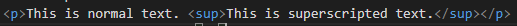

This element defines superscripted text. This text appears half a character above the normal line, and it is sometimes rendered in a smaller font.
This text can be used for footnotes like WWW[1]
sub element is used for subscripted text.
This is normal text. This is superscripted text.
This is how its coded:
The global attributes are supported. Global
The event atttributes are suported. Event Attributes